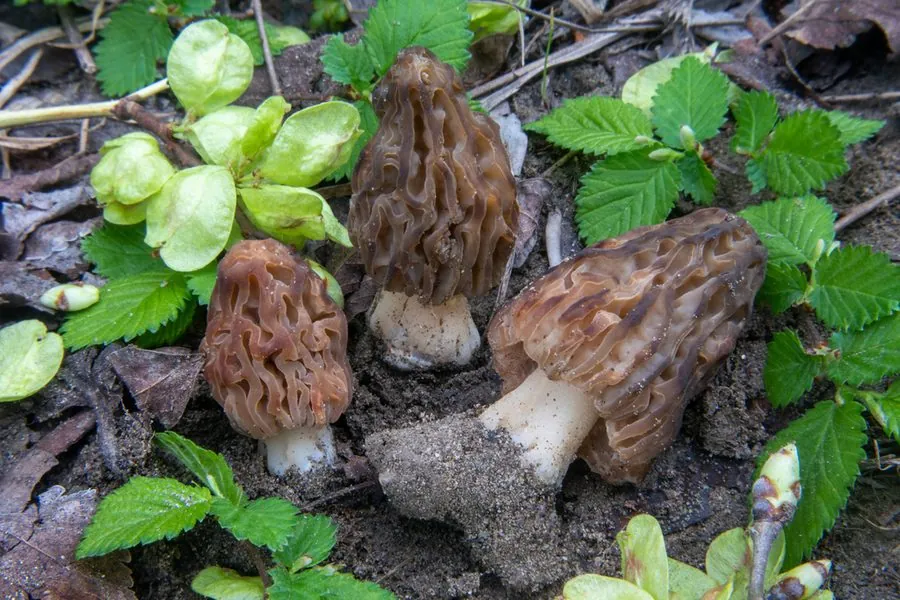

真菌 · 真菌界
粗腿羊肚菌 Morchella crassipes

羊肚菌科食用菌，菌盖近圆锥形、凹坑较浅，菌柄粗壮膨大为其特征，春季生于林缘沃土，须熟透食用。
- 分类
- 门子囊菌门纲盘菌纲目盘菌目科羊肚菌科属羊肚菌属
- 栖息环境
- 阔叶林缘、果园与富含腐殖质的菜园土，春季雨后发生
- 地理分布
- 北半球温带分布，中国华北、西南及欧洲、北美有记录
- 保护级别
- 暂无评估；野生资源受过度采挖影响
物种志
粗腿羊肚菌的子实体高 8–18 厘米，菌盖近圆锥形至卵形，长 5–10 厘米，表面脊与凹坑较浅而宽，黄褐至灰褐色。菌柄显著粗壮，直径 2–5 厘米，基部膨大呈球状，白色至淡黄，表面有细纵纹，中空。孢子印淡黄色，子囊孢子宽椭圆形。
粗腿羊肚菌多生于阔叶林缘、果园与富含腐殖质的菜园土上，常在春季 4–5 月雨后发生，喜疏松肥沃、排水良好的土壤。其菌柄粗壮、出肉率高，是羊肚菌中较受欢迎的食用种类，风味与尖顶羊肚菌相近。与所有羊肚菌一样，生菌体含肼类毒素，必须彻底加热后食用。栽培上它属于较难诱导出菇的种类，目前以野生采集为主，过量采挖已使部分产地资源减少。
形态与习性
- 菌盖近圆锥形，长 5–10 厘米，凹坑浅宽
- 菌柄粗壮，直径 2–5 厘米，基部膨大
- 孢子印淡黄色，孢子宽椭圆形
- 生境林缘、果园沃土，春季 4–5 月雨后
- 食用性出肉率高，须彻底熟透后食用
- 毒性生菌体含肼类毒素，禁止生食
趣味知识
- 粗腿羊肚菌的菌柄可以粗到 5 厘米，是羊肚菌属中出肉率最高的种类之一。
- 它的菌柄基部常膨大成球状，埋在土中，采挖时容易折断。
- 羊肚菌的凹坑越浅、脊越平，往往越接近粗腿羊肚菌这类形态。
- 与所有羊肚菌一样，它不能生吃，火锅涮几下就入口的做法并不安全。